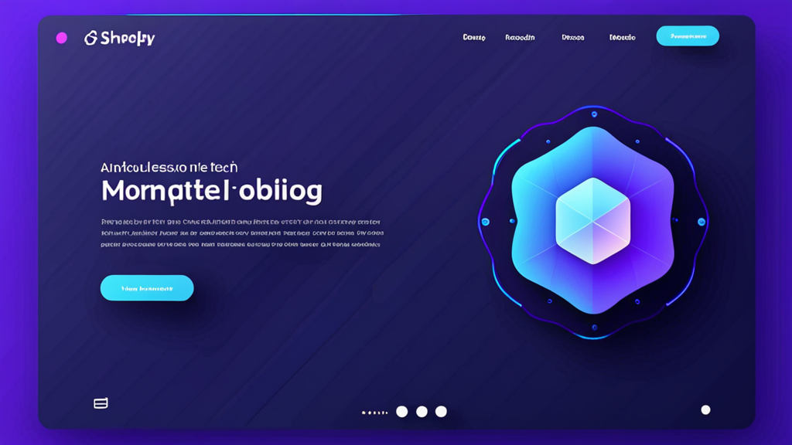

에어비앤비 호스트를 위한 최고의 AI 도구: 개성을 유지하며 게스트 메시지 자동화하기
휴가용 임대 숙소를 운영한다면, 이런 상황 익숙하실 겁니다. 밤 11시에 체크인 방법을 묻는 게스트, 맛집 추천을 요청하는 다른 게스트, 와이파이 비밀번호를 헷갈려 하는 또 다른 게스트. 메시지 하나당 답변하는 데 2분이 채 안 걸리지만, 다섯 개의 숙소를 동시에 운영하다 보면 그 2분이 순식간에 쌓여갑니다.
바로 이 지점에서 에어비앤비 호스트를 위한 최고의 AI 도구가 빛을 발합니다. 하지만 모든 도구가 동일한 성능을 내는 것은 아닙니다. 어떤 도구는 게스트가 한눈에 알아챌 수 있는 로봇 같은 답변을 내뱉고, 다른 도구는 속도를 위해 개성을 희생하도록 강요합니다.
이제 실제로 효과가 있는 도구와, 고객 서비스 봇처럼 들리지 않으면서 이 도구들을 활용하는 방법을 알아보겠습니다.
게스트 소통이 호스팅 시간을 잡아먹는 이유
호스트로서 여러분은 단순히 숙소만 관리하는 것이 아닙니다. 기대치, 감정, 그리고 물류까지 관리해야 합니다. 모든 게스트는 질문을 가지고 도착합니다. 어떤 게스트는 예약 전에, 어떤 게스트는 투숙 중에, 또 어떤 게스트는 체크아웃 후에 질문을 합니다.
일반적인 게스트 메시지를 간단히 분류해 보겠습니다:
- 예약 전 문의: 편의 시설, 반려동물 정책, 얼리 체크인 관련
- 도착 당일 질문: 도어 코드, 주차, 열쇠 수령 관련
- 투숙 중 요청: 추가 수건, 시설 문제, 현지 팁 관련
- 체크아웃 후 메시지: 분실물, 리뷰 요청 관련
관리하는 숙소 수를 곱하면, 하루에 수십 통의 메시지를 처리해야 합니다. 각 메시지에는 신중하고 정확하며 시의적절한 답변이 필요합니다. 메시지를 놓치면 좋지 않은 리뷰를 받을 위험이 있고, 성급하게 답변하면 무뚝뚝하게 비칠 수 있습니다.
해결책은 소통을 중단하는 것이 아닙니다. 더 스마트하게 작업하는 것입니다.
에어비앤비 호스트 답변 도우미에서 찾아야 할 것
도구를 선택하기 전에, 좋은 게스트 메시지 도우미와 실망스러운 도우미를 구분하는 요소를 알아야 합니다. 다음은 반드시 갖춰야 할 기능들입니다.
1. 맥락 인식
도구는 게스트의 메시지를 읽고 그들이 실제로 무엇을 묻는지 이해해야 합니다. "와이파이 비밀번호"에 대한 질문은 "와이파이에 어떻게 연결하나요?"와 다릅니다. 좋은 도우미는 그 차이를 알고 적절히 응답합니다.
2. 음성 커스터마이징
여러분의 숙소에는 개성이 있습니다. 숲속의 아늑한 오두막이라면 따뜻하고 소박한 톤이 어울리고, 세련된 도시 아파트라면 모던하고 효율적인 톤이 좋습니다. 도구는 이러한 음성을 정의할 수 있게 해줘야 하며, 획일적인 템플릿을 강요해서는 안 됩니다.
3. 프라이버시 우선 설계
게스트 메시지에는 도착 시간, 전화번호, 특별 요청 등 개인 정보가 포함됩니다. 데이터를 로컬에서 처리하거나 강력한 암호화를 제공하는 도구가 필요합니다. 아무도 게스트의 신용카드 정보가 타인의 클라우드에 떠도는 것을 원하지 않을 것입니다.
4. 플랫폼 유연성
에어비앤비, Vrbo, Booking.com에 모두 등록되어 있다면, 도구는 모든 플랫폼에서 작동해야 합니다. 탭과 로그인 화면을 전환하는 것은 시간 낭비입니다. 좋은 휴가용 임대 메시지 도구는 이미 작업 중인 환경에 통합됩니다.
최고의 AI 도구가 실제로 시간을 절약하는 방법
실용적인 이야기를 해보겠습니다. 인간적인 요소를 잃지 않으면서 자동화를 통해 게스트 메시지를 처리하는 방법입니다.
반복적인 작업은 자동화하고, 중요한 작업은 개인화하세요
모든 메시지에 맞춤형 답변이 필요한 것은 아닙니다. 체크인 안내, 와이파이 정보, 체크아웃 알림은 매번 거의 동일합니다. 이런 것들은 자동화하세요.
하지만 게스트가 "저희 결혼기념일을 축하하고 있어요"라고 말할 때, 봇이 "즐거운 여행 되세요"라는 일반적인 답변을 보내지 마세요. 그런 순간에는 개인적인 터치가 필요합니다. 손글씨 메모, 와인 한 병, 또는 현지 맛집 추천이 좋은 예입니다.
좋은 호스트 메시지 자동화 도구는 규칙을 설정할 수 있게 해줍니다. 일상적인 질문에는 빠르고 정확한 답변을, 특별한 상황은 직접 처리하도록 플래그를 지정합니다.
플랫폼 전체에서 일관된 브랜딩 유지하기
에어비앤비와 Vrbo에서 숙소를 운영한다면, 게스트는 어느 플랫폼에서든 여러분과 소통할 수 있습니다. 마치 같은 숙소를 두 명의 다른 사람이 운영하는 것처럼 느껴져서는 안 됩니다.
에어비앤비 호스트를 위한 최고의 AI 도구는 브랜드 음성을 저장하고 모든 곳에 적용할 수 있게 해줍니다. 따라서 게스트가 에어비앤비에서 직접 예약으로 이동하더라도 동일한 커뮤니케이션 스타일을 인식할 수 있습니다.
번아웃 없이 시간대 차이 극복하기
24시간 내내 깨어 있을 수는 없습니다. 하지만 게스트는 그렇습니다. 도쿄에서 막바지 숙소를 예약하는 게스트가 뉴욕에서 잠든 여러분에게 메시지를 보낼 수도 있습니다.
자동 응답은 메시지를 확인하고, 일반적인 질문에 즉시 답변하며, 언제 연락 가능한지 알려줄 수 있습니다. 이렇게 하면 게스트를 방치하지 않으면서 시간을 벌 수 있습니다.
로봇처럼 들리지 않고 게스트 메시지 AI를 사용하는 실용적인 팁
솔직히 말하면, 게스트는 여러분이 AI를 사용하는지 신경 쓰지 않습니다. 그들은 자신의 문제를 빠르고 정중하게 해결해 주는지에 관심이 있습니다. 자동 응답이 그 역할을 한다면, 그들은 만족합니다.
하지만 함정이 있습니다. 다음 실수를 피하세요:
너무 빠르게 답변하지 마세요
게스트가 메시지를 보내고 3초 안에 답변을 받으면, 자동화된 것임을 알 수 있습니다. 체크인 안내에는 괜찮습니다. 하지만 감정적인 메시지(불만, 특별 요청, 개인적인 이야기)에는 약간의 지연을 두거나 직접 처리하세요.
항상 추가 질문을 유도하세요
모든 자동 응답에는 추가 질문을 초대하는 문구를 포함해야 합니다. "다른 필요하신 것이 있으면 알려주세요. 언제든지 도와드리겠습니다."라고 끝맺음하면 대화가 인간적으로 유지됩니다.
정기적으로 검토하고 조정하세요
매주 자동 응답을 확인하세요. 게스트가 여전히 동일한 후속 질문을 하고 있나요? 그렇다면 답변이 충분히 완전하지 않다는 뜻입니다. 업데이트하세요.
HostReply AI가 이 그림에 들어맞는 이유
이 워크플로우를 위해 특별히 설계된 도구가 있습니다. HostReply AI는 에어비앤비 호스트와 휴가용 임대 관리자를 위해 만들어진 Chrome 확장 프로그램입니다. 맥락에 맞는 답변을 생성하고, 일반적인 문의를 처리하며, 모든 게스트 메시지에서 호스팅 음성을 일관되게 유지합니다.
차별화된 점은 프라이버시 우선 접근 방식입니다. 게스트 데이터는 여러분의 기기에 남아 있습니다. 클라우드 저장소나 제3자 접근이 없습니다. 데이터 보안을 중요시하는 호스트에게는 중요한 요소입니다.
또한 에어비앤비, Vrbo, Booking.com에서 작동하므로 도구를 전환할 필요가 없습니다. 이미 사용 중인 플랫폼에서 직접 답변할 수 있습니다.
단기 임대 답변 도구를 평가 중이라면, 한 번 살펴볼 가치가 있습니다. 하지만 더 중요한 것은, 어떤 도구를 선택하든 여기서 다룬 원칙이 동일하게 적용된다는 점입니다.
게스트 메시지 자동화의 핵심
에어비앤비 호스트를 위한 최고의 AI 도구는 여러분을 대체하지 않습니다. 번거로운 작업을 처리하여 여러분이 중요한 일, 즉 훌륭한 게스트 경험을 창출하는 데 집중할 수 있게 해줍니다.
자동화는 볼륨을 처리합니다. 여러분은 뉘앙스를 처리합니다. 이 둘의 조합이 승리 공식입니다.
가장 흔한 게스트 질문을 감사하는 것부터 시작하세요. 여러분의 톤에 맞는 답변 라이브러리를 구축하세요. 그런 다음 이러한 답변을 일관되게 실행하는 도구를 도입하세요. 매주 수 시간을 절약할 수 있을 뿐만 아니라, 게스트는 여전히 실제 사람과 대화하고 있다고 느낄 것입니다.
이 워크플로우를 위해 특별히 제작된 도구가 궁금하시다면, HostReply AI를 확인해 보세요. 호스팅 음성을 유지하면서 시간을 절약할 수 있도록 설계되었습니다.